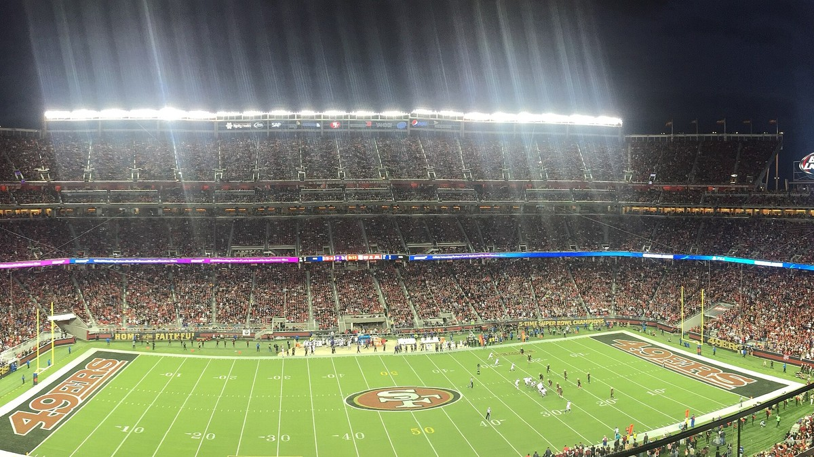

Mike Evans Is Back, and Brian Flores Is Waiting in Mexico City
Eight and one against seven and two, Sunday night, 7,352 feet up. Our best receiver comes back the same night we see the meanest defense in football. Of course he does.

I found out Mike Evans was playing tonight while I was standing in line at the Philz on 24th, and I said "yes" out loud. Not a cool yes. A loud one. The barista looked at me like I'd just ordered in another language.
He hasn't played since the second quarter of that Monday night game against Washington. The right Achilles. The word they kept using was tendinitis, which is the kind of word that sounds small until you're a 33 year old receiver and it's attached to the tendon every 49ers fan has learned to be afraid of. I watched him come off that night and I didn't say anything for a full drive. My wife asked if I was okay. I told her I was fine. I was not fine.
Since then it's been a month of reading practice reports like tea leaves. Didn't practice Wednesday. Didn't practice. Didn't practice. Then this week, up at the Air Force Academy in Colorado Springs, with the wind blowing so hard you could see the goalposts move, he went out there Thursday and Friday. Limited. Kyle called him "a little sore" and said he was going in the right direction, and I've read enough Kyle quotes to know "going in the right direction" can mean anything from "he's playing" to "check back in December."
He's playing. He's on the field tonight in Mexico City. I'm going to let myself enjoy that for exactly one more paragraph before I start worrying about everything else.
Twenty seven catches, 420 yards and three touchdowns in six games before he went down. That's not a guy easing into a new uniform. That was our number one, the big body Purdy could throw a jump ball to on third and seven and just trust. Kyle said it plainly this week: "Mike's our guy and a very unique player and been doing it at a high level for a very long time." Yeah, Kyle. We know. We noticed every Sunday he wasn't out there.
Now the bad news, and it wears purple
Of all the nights to come back.
Brian Flores has built a defense in Minnesota that I genuinely don't enjoy thinking about. They give up 14 points a game, best in the league. They've got 37 sacks and 17 takeaways through nine games, and the last team to put up that combo that early was the 2000 Bucs. They blitz on something like 72 percent of dropbacks, which is more than double what a normal defense does. Teams have been inside their 20 twenty times and walked away with a touchdown five times. Five!
Last week they went to Lambeau and sacked Jordan Love eight times in a 30 to 10 game. Eight. I watched some of it on RedZone with the sound off and it looked like a nature documentary.
What Flores brings
- 14.0 points allowed a game, No. 1
- 37 sacks, 17 takeaways in nine games
- Blitzes about 72 percent of the time
- 25 percent red zone touchdown rate allowed
- Hasn't given up more than 23 all year
What we bring
- 31.2 points a game, second in football
- Best in the league in yards per play, 6.66
- Touchdowns on 24 of 29 red zone trips
- Purdy leading the NFL at 9.0 yards an attempt
- Christian with 13 touchdowns, tied for the lead
Best offense against best defense, on Sunday Night Football, for the top of the NFC. If you'd told me in August that this is where we'd be on November 22, I would've taken it and hung up the phone before you could add a catch.
Here's the catch anyway. I've got a nagging feeling about Flores and Kyle that I can't shake. Every time I go looking, I find another person saying Flores has never lost to a Kyle Shanahan offense in any job he's had. I don't love that. I don't love that Kyle spent part of his press conference this week basically gushing about the guy, calling him more unique than the other 31 defensive coordinators. When Kyle starts complimenting a coordinator that much, it usually means he's been up at 2 in the morning watching that guy's tape and not sleeping.
Why Brock might actually love this
I know. Purdy against Minnesota hasn't been pretty. He's 0 and 2 against them as a starter, that 22 to 17 Monday night loss up there in 2023 and the 23 to 17 one in Week 2 last year, with more turnovers than touchdowns across those two. I remember the 2023 one because I fell asleep on the couch angry and woke up angrier.
But this year's Brock eats the blitz. Against extra rushers he's something like 41 of 58 for 728 yards with 11 touchdowns and one pick. That's not a typo. When you send the house at him this season, he's been making you pay for it, usually by hitting the guy who's now wide open because you sent the house. Flores even said the game has slowed down for him, and coming from that guy that's a compliment with teeth.
The problem isn't the throws, it's the hits. He's been sacked 13 times in the last five games, five of those in Dallas last week. Trent Williams got full practices in this week after some rest days and I'm holding onto that. If the line gives Brock half a second, the blitz becomes our play, not theirs.
And this is exactly why Evans matters tonight. You can't blitz 72 percent of the time without leaving somebody one on one. For a month, that somebody has been Christian and George Kittle carrying the whole passing game on their backs, plus Deebo since he got back, plus Keenan Allen learning the playbook on the fly after the trade from Indy. Put a 6 foot 5 guy who strung together eleven straight thousand yard seasons in Tampa on an island against a corner who has nobody behind him? That's the throw. That's the whole game plan, as far as I'm concerned, and I'm not even sure he plays 30 snaps.
That's the part I keep going back and forth on. I'd bet Kyle has him on a pitch count. Achilles stuff doesn't just vanish after two limited practices, and nobody in this building wants to see him limp off again with January coming. So I'm not expecting a hundred yards. I'm expecting three or four catches, one of them on third down, one of them in the end zone if Brock trusts him like he did in September. I'll take it. I'll take one.
Kirk Cousins, of all people
Minnesota's starting quarterback tonight is Kirk Cousins. Again. Kyler Murray's out with the hamstring and Jordan Addison's out after thumb surgery, so it's Kirk, who we just saw three weeks ago at Levi's in a Raiders uniform. We beat him 38 to 17 that day. He threw three picks. I was there. I was happy.
Then the Raiders traded him to the Vikings at the deadline, and now he's back in purple, which is either the most Kirk Cousins thing that's ever happened or a horror movie depending on how you look at it. He's thrown 22 touchdowns between the two teams. He's going to play his 11th game of the season tonight with no bye week, because the Raiders hadn't had theirs and the Vikings already had theirs. Kyle, who drafted him back in Washington in 2012, texted him after the trade and suggested he just take this week off. Kyle said he reminded him he isn't getting a bye this year, "so maybe he should take it that week."
I laughed at that for a whole day. I also know he's not taking it off.
The real problem is still Justin Jefferson, who got 13 targets in Green Bay last week and only ever needs one. And it bugs me more than it should that Jauan Jennings is expected back for them tonight, plus Jordan Mason is in their backfield. Two guys I used to cheer for, in purple, in Mexico. Jauan's going to catch a third down ball on us tonight and I'm going to have to sit there and feel weird about it.
Our pass rush has to show up
Nick Bosa's been back about two weeks and he hasn't had a sack in four games, which is the longest dry spell of his career. I'm not panicking. I am watching. Bosa against a 38 year old quarterback who isn't exactly scrambling around anymore feels like the night it breaks loose.
And then there's DeForest Buckner, home again, with six sacks in five career games against Minnesota. I don't know who did the scouting on that one but I'd like to buy them a burrito tonight.
Dre Greenlaw's questionable with the neck, Mac Jones is questionable with the illness, and the secondary is a little held together with tape. Nobody got ruled out though. That's a small miracle this season.
The thin air thing
The team spent the whole week in Colorado Springs so their lungs would stop yelling at them. The Vikings stayed home, used an altitude room they set up in their building, and flew down Saturday. I have no idea who's right. I just remember the last time we went to this exact stadium, back in 2022 when it was still called the Azteca, we did the Colorado Springs thing then too and beat Arizona 38 to 10. I'm a superstitious man. Same plan, same result, please.
It's also going to be a 49ers crowd. Mexico City has always been a Niners town. I've got a cousin in Guadalajara who flew in yesterday and sent me a picture of a whole hotel lobby in red. This is technically a home game. It might be the loudest home game we play all year.
My call
The books have us around three and a half point favorites with a total in the mid 40s. I think it's closer to a slugfest than a shootout, because nobody's scoring 40 on Flores. I think Brock eats a couple of sacks early, gets mad, and starts throwing hot routes into the space the blitz leaves behind. I think Evans catches a touchdown on a fade in the second half and the whole stadium loses it.
49ers 24, Vikings 20.
Kickoff's at 5:20 Pacific on NBC. I'll be on the couch with the chili going and my phone face down, because the group chat's too much for a game like this.
If Evans goes down again, I'm not writing about it tomorrow. I'll just sit there.
Catch up on last week's 46 to 40 shootout in Dallas, the night Evans went down on the Monday night Washington week, and the whole saga of Jauan ending up in Minnesota. Everybody who's hurt is on the 49ers injury report, every game left is on the 49ers schedule hub, and if you want to know why I'm not worried about Brock, it's all on his career passer rating page. Buckner's homecoming is in what the reunion changes.
More coverage: 49ers · Bay Area NFL · Bay Area Sports Blog home